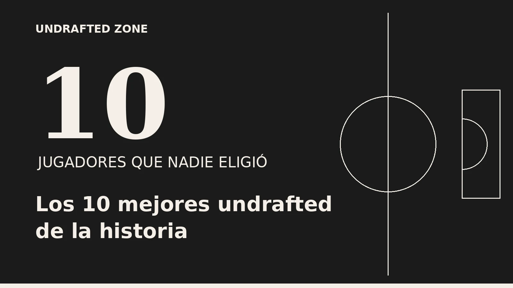

Los 10 mejores jugadores undrafted de la historia de la NBA
Diez jugadores que nadie eligió en el draft y que llegaron a campeones, All-Star y Defensores del Año. Mi ranking, su criterio y los que se quedan fuera.

Nadie elige a un jugador undrafted para que sea una estrella. Por eso su historia tiene algo que la de los elegidos en el número uno no tiene: cada uno de ellos empezó a una distancia enorme del sueño. Así que este ranking no premia solo lo que hicieron, sino de dónde partían. Son diez nombres sacados de la lista de jugadores que nunca fueron elegidos en un draft, y los he ordenado con un criterio que te cuento antes de defender cada puesto.
El criterio, antes que nada
Cuatro cosas pesan para mí, y en este orden. Primero, el impacto en la cancha: premios individuales, participaciones en el All-Star, equipos All-NBA y All-Defensive. Segundo, los títulos y el papel que el jugador tuvo en ellos, porque un campeón con un papel secundario vale algo más que un gran jugador de un equipo que nunca llegó. Tercero, la longevidad, que en el caso de un undrafted es casi un logro en sí mismo. Y cuarto, cuánto sorprendió: de qué punto partía cada uno y qué distancia recorrió.
Ese cuarto criterio es el que más pesa en el ranking, aunque no se vea. Para entender lo que cuesta llegar a la liga sin haber sido elegido, conviene repasar cómo se paga a los jugadores de draft en la escala de novatos. Un undrafted que llega a ser All-Star ya ha ganado una carrera que nadie le prometió. Uno que además gana premios defensivos o un título, ha hecho algo que en la mayoría de los casos no tendría que haber ocurrido.
1. Ben Wallace, el hombre que defendía todo
Ben Wallace es el número uno y no hay mucho que discutir. Cuatro veces Defensor del Año (2001, 2002, 2004 y 2005), cinco veces en el primer quinteto defensivo entre 2001 y 2005, y un segundo quinteto defensivo en 2006. Fue campeón, tuvo cuatro participaciones en el All-Star (sin años en el registro que manejo) y lideró la liga en rebotes en 2002 y 2003. Además, lideró los tapones en 2001.
Su historia es la del jugador que se hizo pívot de élite partiendo de un punto en el que nadie lo elegía. Su camiseta número 3 está retirada en Detroit, y eso dice más de su papel que cualquier estadística. Si alguien quiere explicar qué es la defensa en la NBA sin usar la palabra «intensidad», empieza por Ben Wallace.
2. Connie Hawkins, el que la NBA tardó en mirar
Connie Hawkins ocupa el segundo puesto y es la defensa más difícil de este ranking, porque la mitad de su carrera de élite ocurrió en la ABA. Fue MVP de la ABA en 1968, MVP de los playoffs de la ABA ese mismo año y campeón de la ABA. Después llegó a la NBA, donde fue cuatro veces All-Star (de 1970 a 1973) y estuvo en el primer equipo All-NBA en 1970. Su número 42 está retirado por los Suns.
Lo pongo segundo porque su carrera de élite es la prueba de que el talento sin ficha no es lo mismo que el talento sin valor. Lo que no puedo decir es que sea campeón de la NBA, porque no lo fue. Los títulos que cuento son de la ABA, y eso es una distinción que hay que hacer en el texto.
3. Bruce Bowen, el defensor que se volvió indispensable
Tres veces campeón, cinco veces en el primer quinteto defensivo entre 2003 y 2007, tres veces en el segundo entre 2000 y 2002. El número 12 de los Spurs está retirado. Bowen es el perfil que confunde a los que buscan estrellas: no era un anotador de cabecera, era alguien que hacía que el rival tuviera que pagar cada posesión.
Lo pongo tercero porque su papel en los títulos fue distinto al de Wallace, pero igual de decisivo. Un equipo campeón necesita a alguien que marque al mejor, y Bowen lo hizo durante años.
4. Udonis Haslem, la lealtad como carrera
Tres veces campeón, segundo equipo del quinteto de novatos en 2003 y el número 40 retirado por el Heat. Haslem tuvo una carrera que empezó en 2002 y terminó en 2023, y ese es su mérito principal: veintiún años de baloncesto de la misma liga. Un undrafted que llega a retirarse con el número de un equipo es algo que no se ve a menudo.
No lo pongo por encima de Bowen porque sus números de élite son menores: no tuvo premios defensivos de primer equipo ni una carrera en el máximo nivel tan larga como la de Wallace. Pero su longevidad y su papel en tres títulos justifican el cuarto puesto.
5. John Starks, el escolta con ganas de comerse la pista
John Starks tuvo una carrera de escolta con mucho carácter. Fue Sexto Hombre del Año en 1996, segundo equipo del quinteto defensivo en 1992 y All-Star en alguna temporada que el registro no fija. Fue campeón, aunque sin año en mi fuente, y ganó la Copa de la NBA en 2025.
Lo pongo en el quinto puesto y no más arriba porque su impacto fue más de intensidad que de dominio. Pero partía de una distancia enorme y llegó a ser de los mejores escoltas de su momento, y eso es lo que el criterio de sorpresa me pide premiar.
6. Fred VanVleet, el que todavía tiene partidos por delante
Fred VanVleet sigue en activo, y eso es lo primero que hay que decir. Ha sido campeón de la NBA (sin año en mi fuente) y All-Star (también sin año). Fue dos veces Jugador del Año de la MVC y campeón de la D-League en 2017.
Lo pongo sexto con una reserva clara: su carrera no ha terminado, y un ranking como este se reescribe cada temporada. Si sigue como va, subirá en la próxima versión.
7. Jeremy Lin, el fenómeno que se ganó la siguiente oportunidad
Jeremy Lin fue campeón de la NBA en 2019, y su historia tiene un componente de sorpresa que pocos undrafted igualan. Después de la NBA siguió ganando: campeón de la liga taiwanesa en 2025, MVP de esa misma liga y MVP de las Finales de la TPBL. Se retiró en 2025. Su número 7 está retirado por los New Taipei Kings.
Lo pongo séptimo porque su impacto en la NBA fue más breve que el de los cinco primeros, aunque su camino fue tan sorprendente como el de cualquiera de ellos.
8. Avery Johnson, el base que terminó entrenando un campeón
Avery Johnson fue campeón de la NBA como jugador (sin año en mi fuente) y después Entrenador del Año en 2005. Su número 6 está retirado por los Spurs. Antes de llegar a la liga fue dos veces líder de asistencias de la NCAA, en 1987 y 1988, y Jugador del Año de la SWAC en 1988.
Lo pongo octavo porque su mejor etapa en la NBA fue como entrenador, y eso lo aleja de los jugadores que aquí se miden por su impacto en pista. Pero su camino de undrafted a campeón y luego a Entrenador del Año es uno de los más completos de la lista.
9. Alex Caruso, el defensor que la liga aprendió a pedir
Alex Caruso es campeón dos veces (sin años en mi fuente), tuvo un puesto en el primer quinteto defensivo en 2022 y en el segundo en 2023. Sigue en activo y es el perfil de jugador que se entiende mejor en los minutos de rotación: de los que cambian un partido sin tirar mucho.
Lo pongo noveno porque su impacto, aunque alto en defensa, todavía es más de rol que de referencia. Quedó por delante de otros undrafted por su pedigrí de campeón y por su presencia constante en la defensa de los equipos en los que ha jugado.
10. Darrell Armstrong, la última plaza
Darrell Armstrong cierra el top 10. Fue Jugador que más mejoró de la liga en 1999 y Sexto Hombre del Año en 1999, dos premios en el mismo año. Antes de llegar a la NBA ganó la Copa gallega en 1995, fue máximo anotador de la liga española en 1995 y Jugador del Año de Chipre en 1994. Después fue asistente y ganó el título de la NBA como entrenador ayudante en 2011.
Lo pongo décimo porque su carrera fue más corta y menos brillante que la de los nueve anteriores, pero su historia es la de un undrafted que se hizo un hueco en tres ligas distintas antes de llegar al máximo nivel. Y eso, según mi criterio de sorpresa, cuenta.
Quién se queda fuera
Hay nombres que se merecen una mención. Naz Reid fue Sexto Hombre del Año en 2023 y puede subir en la próxima versión. Austin Reaves ganó la Copa de la NBA en 2023 y es uno de los jugadores más reconocibles de la liga. Covington fue primer quinteto defensivo en 2017. Raja Bell fue primer quinteto defensivo en 2006. Seth Curry y J. J. Barea tienen logros de liga menor o títulos sin año. Wesley Matthews y Brad Miller no tienen logros de la NBA suficientes para este top, en el caso de Miller solo dos participaciones en el All-Star. Duncan Robinson no tenía logros leídos. Y un undrafted que firma un contrato de mínimo vive dentro del marco que explica el tope salarial, la luxury tax y los aprons, que decide cuánto puede gastar cada equipo en su plantilla. Para ver de qué se habla cuando se compara un pick tardío con un undrafted, el repaso de los picks del 21 al 30 sirve de referencia. Y Moses Malone no entra por una razón de definición: fue elegido en el draft de la ABA de 1974, así que no es undrafted según la lista que uso.
Preguntas frecuentes
¿Quién es el mejor jugador undrafted de la historia?
Ben Wallace, en mi ranking. Cuatro veces Defensor del Año y campeón lo sostienen en el primer puesto.
¿Hay títulos de la ABA en la lista?
Sí. Connie Hawkins fue campeón de la ABA en 1968. El texto lo dice, porque no es lo mismo que un título de la NBA.
¿Por qué no entra Moses Malone?
Fue elegido en el draft de la ABA de 1974, y no figura como undrafted en la lista que uso. Si alguien quiere contarlo, hay que explicar ese matiz primero.
¿Por qué no aparecen años de títulos?
Porque en el material que manejo algunos años no están verificados. Prefiero decir «campeón» antes que escribir un año que no puedo comprobar.